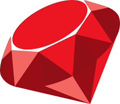

Владислав Сергеевич Акимов
Цель
Получить оффер Ruby on Rails developer или engineer с удалённым сотрудничеством
Недавний проект
Высоконагрузочное приложение с самоуничтожающими сообщениями
- по времени
- по посещениям
Масштаб данных приложения составляет более 1 000 000 записей с удивительной функциональностью отклика
Я использовал Postgres и Redis в качестве баз данных + сервис DeadShot, который уничтожает сообщения об истечении срока действия
Я решил проблему с большой нагрузкой благодаря великолепному дизайну системы и превосходным алгоритмам
Опыт работы и профи-навыки
Занимаюсь программирование на Ruby с 2015 года
Комерчиская разработка 2 года 10 месяцев
Декабрь 2019 - Март 2020 работал в компании SoftServe
Обновил более 2 CRM версий Rails 4 до 5.2 +
Использовал Jenkins, Git и комуникацию с опытными коллегами
Разрабатывал проект в сфере юриспруденции Sket
Снизил нагрузку на главной странице приложения с O(n) до O(10) добавлением ленивой загрузки и оптимальных sql-запросов для фильтрации клиетских данных
Проводил деплоии в команде на продакшен сервер
Получил рекомендацию на Linkedin после ухода
Маштабировал интеграцию данных клиентов с добавлением ESB Kafka
Занимался администрированием сервера ESB Kafka
Использую такие технологии:
-  Ruby ниндзя
![[Ruby on Rails]](images/rails.png) Ruby on Rails 6 на продвинутом уровне
Ruby on Rails 6 на продвинутом уровне![[Redis]](images/redis.png) Redis на хорошем уровне
Redis на хорошем уровне![[PG]](images/pg.png) Postgres c ActiveRecord великолепно
Postgres c ActiveRecord великолепно![[Rspec]](images/rspec.png) Rspec владею на хорошем
Rspec владею на хорошем ES6 использую на хорошем уровне
ES6 использую на хорошем уровне- English verbal and written at functional business level (advanced in technical English)
О себе
Я люблю создавать новые вещи, воплощать их в реальность, всегда узнавать новоё и улучшать своё старое
Моя цитата.
Образование программиста
Прошел онлайн-курсы по Ruby/Ruby on Rails. Отследить можно у меня на аккаунте
Изучал такие книги: Программирование на языке